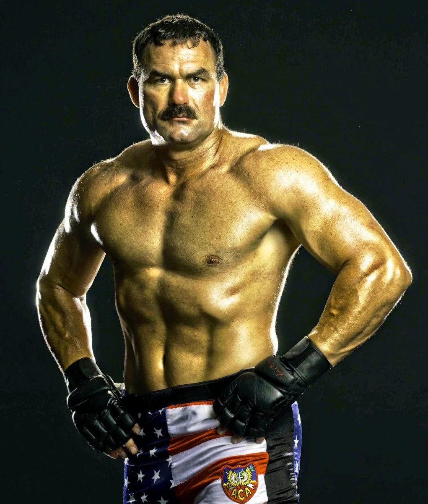

| Бойцы мировго уровня | Общая информация |
|

Дональд «Дон» Фрай (англ. Donald Frye род: 23 ноября 1965) — американский боец смешанных боевых искусств, профессиональный реслер, актёр. Является одним из ранних представителей ММА, одержавший победы в таких турнирах как UFC 8 и Ultimate Ultimate 96. Несмотря на его достижения, он ушёл из ММА в 1997 году, чтобы продолжить карьеру в профессиональном реслинге. В 2001 году вернулся в смешанные единоборства и выступал до 2009 года. Последний бой провёл в декабре 2011 года, проиграв нокаутом Рубену Виллареалу в рамках турнира Gladiator Challenge: Mega Stars.
|